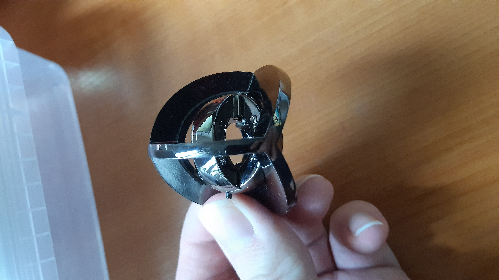
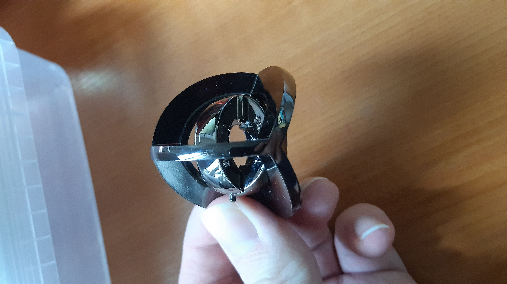

Joni Korkiakoski - Harrastukset
Tietokoneet
Olen jo pienestä pitäen ollut kiinnostunut elektroniikasta joten tietokoneet harrastuksena ei ole mikään ihme.
Videopelit
Videopelejä olen pelannut melkein koko ikäni. Ensimmäinen konsoli jolla pääsin pelaamaan oli Nintendo Entertainment System [NES]. Seuraava konsoli joka meidän perheeseen hankittiin oli Playstation. Siitä tulikin suosikki konsolini.
Sen joulun vielä muistan kun saatiin Playstation 2. Lahjaksi saatiin Spyro ja Crash Bandicoot pelit joita sitten koko joulupäivä pelattiin. PC:llä aloin pelaamaan enemmän kun yhtiö nimeltä Valve julkaisi Steam:n.
Pulmapelit
Itse luokkitelen pulmapeleiksi sudokut, ristisanat, picrossit/nonogrammit ja muut pohdintaa vaativat ajanvietteet. Sudokut ovat olleet suosikkejani jo vuosia mutta viimme aikoina olen ollut kiinnostunut picrossesta.
Kuvia pulmapeleistä
 
